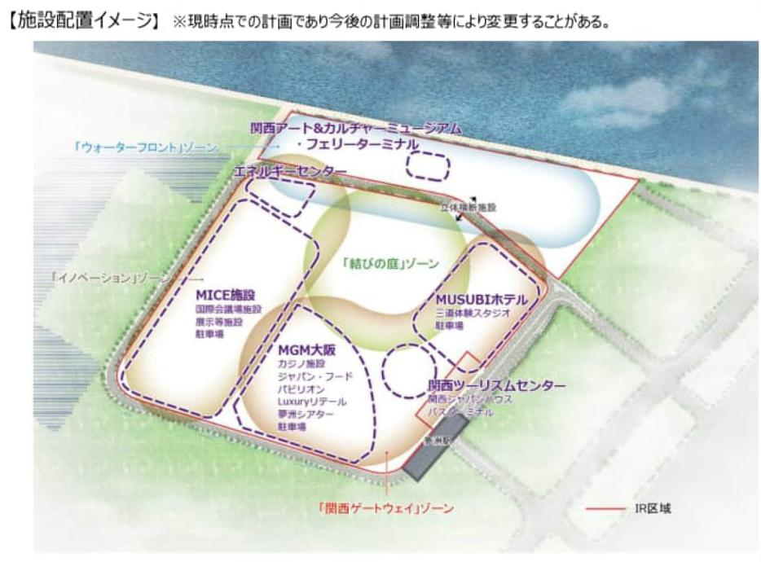
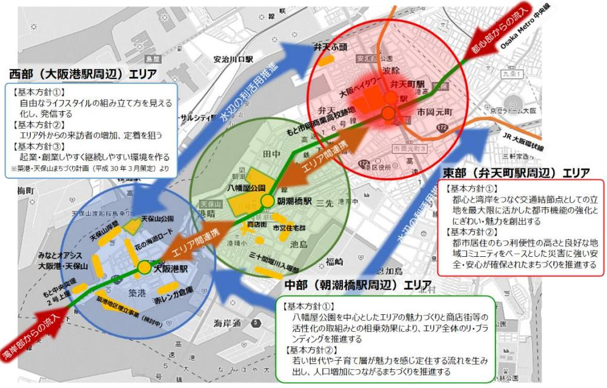
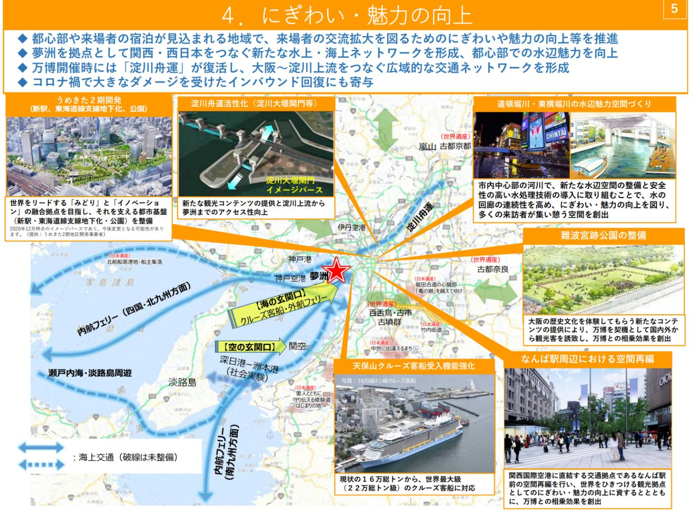
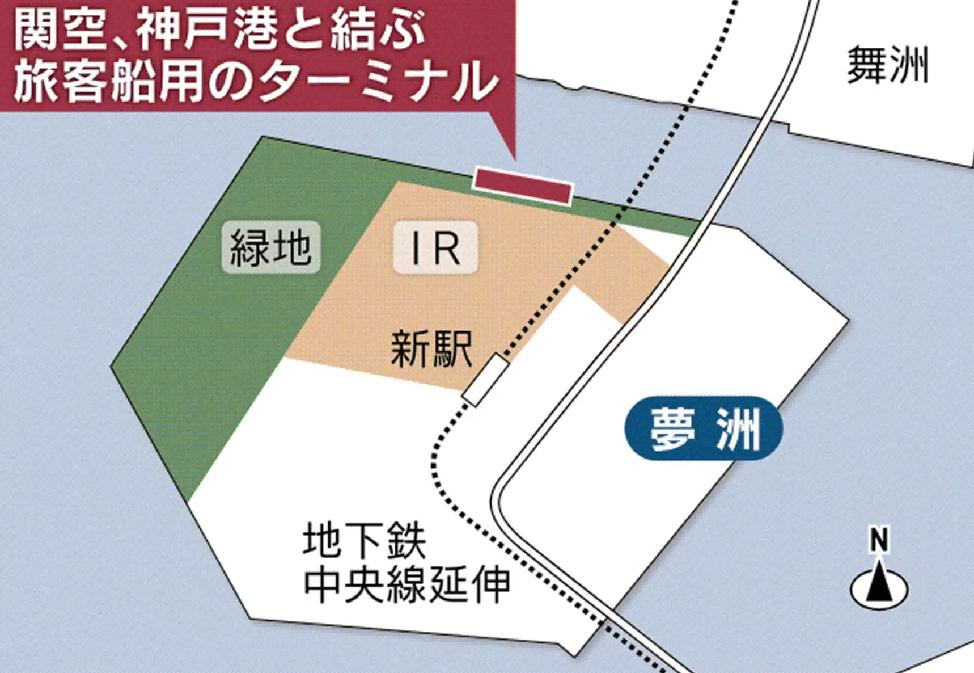

大阪ベイエリアの再開発は、従来の工業・物流拠点から国際的な観光・ビジネス拠点へと変貌を遂げつつある。夢洲IRを核に、港区・咲洲の連動再開発、クルーズ産業の母港化、神戸・伊丹空港の機能強化が統合的に進展している。
1. 夢洲統合型リゾート（IR）プロジェクトの戦略的地位と工程進捗 大阪ベイエリアの再開発は、従来の工業・物流拠点から、国際的な観光・ビジネス拠点へと根本的な変貌を遂げつつあります。その中心となるのが、此花区の人工島・夢洲（ゆめしま）です。
図1：夢洲IRプロジェクトレイアウト IR建設の現状と投資規模 大阪IRプロジェクトは、2025年4月24日に起工式が執り行われ、本体工事が着工されました。2026年1月現在の進捗状況としては、主に建物の巨大な重量を支えるための基礎工事や杭打ち、地下部分の掘削工事が中心に行われています。地上に建物が見える本格的な建築工程は、2026年後半から2027年にかけて開始される見通しです。
投資規模： 約1兆2,700億円。この資金は全額、MGMリゾーツ・インターナショナル、オリックス、および地元企業からなる民間企業の自己資金と融資によって賄われています。経済波及効果： 鋼材需要だけでも鉄骨20万トン、鉄筋15万トンに達し、万博を大きく上回る規模の建設需要を創出しています。開業時期： 2030年秋頃の予定です。夢洲第2期および第3期区域のマスタープラン 万博閉幕後の跡地利用となる「夢洲第2期区域（約50ha）」については、国際観光拠点の形成に向けたマスタープランが策定されています。
優秀提案の選定（2025年1月）： 大林組提案：F1誘致も視野に入れた大規模なサーキット場、アリーナ、高級ホテルを核とするエンターテインメント拠点。 関電不動産開発提案：世界最高水準のラグジュアリーホテルとウォーターパークを中心とした複合リゾート施設。 第3期区域： 夢洲南側に位置し、さらなる埋立造成を経て、長期滞在型のリゾート空間を創出する遠景計画が立てられています。2. 港区・咲洲周辺エリアの連動再開発 図2：港区・咲洲周辺エリア 夢洲の成長を支える「東・西都市軸」の強化として、港区（築港・天保山）や住之江区（咲洲）でも官民連携のプロジェクトが進行しています。
築港・天保山地区の再生 大阪港の「海の玄関口」である天保山周辺では、既存の観光資源を活用した再開発が進んでいます。
PFI事業の検討： 海岸通二丁目地先において、民間事業者による約5.1haの埋立と、アミューズメント施設、ホテル、マンション開発が想定されています。エリア活性化： 万博やIRの開業を見据え、既存の赤レンガ倉庫（G-LION等）やCASOと連携した文化・アートによる賑わい創出が図られています。咲洲コスモスクエア地区の複合開発 コスモスクエア駅前では、Es-Con（エスコン）とアーク不動産による地上18階建ての複合施設プロジェクトが進行中です。
内容： 共同住宅、ホテル、店舗で構成。スケジュール： 2026年8月着工、2030年3月下旬の竣工を予定しており、IRの開業時期に合わせた居住・宿泊ニーズの受け皿となります。交通インフラの拡充 Osaka Metro中央線： 2025年1月19日に夢洲駅まで延伸開業し、市内中心部との直接アクセスを実現しました。延伸検討： 北側ルートとして、JR桜島線（ゆめ咲線）の延伸および京阪中之島線の延伸（中之島〜九条〜夢洲）が引き続き検討対象となっています。3. クルーズ産業の進化と大阪IRとの相乗効果 図3：関西水上交通ネットワーク IRの開業は、日本におけるクルーズ産業のあり方を「寄港」から「滞在・母港化」へとシフトさせる契機となります。
天保山客船ターミナルのリニューアル 2025年にリニューアルオープンした天保山客船ターミナルは、延床面積が従来の2倍の約5,780平方メートルに拡大されました。
受入能力： 22万トン級の超大型クルーズ客船の対応が可能となり、利便性を高めるためのユニバーサルデザインも採用されています。目標： 2025年にクルーズ船の年間入港数100隻を目指しています。夢洲IR専用桟橋（海上アクセス拠点） 図4：夢洲IR専用桟橋イメージ 夢洲北側の水際線には、IR来訪者のための専用桟橋（大阪IR桟橋）が整備されます。
機能： 全長20〜30m程度の小型高速船や連絡船を想定し、関西国際空港、神戸空港、USJ、海遊館などを結ぶ「水上の交通網」を構築します。開業目標： 2030年度秋頃。4. 神戸・伊丹空港の戦略的転換と機能強化 「関西3空港懇談会」の合意に基づき、神戸空港の国際化と伊丹空港の機能適正化が進められています。
神戸空港（UKB）の国際化への歩み 神戸空港は、2030年の国際定期便就航に向けて急速に機能を強化しています。
段階的拡大： 2025年4月より、国内線発着枠を1日80回から120回へ拡大し、国際チャーター便の運用も開始されました。 2030年4月を目標に、定期国際線を解禁（1日40回上限）する方針です。 施設整備： 第2ターミナルビル（サブターミナル）の供用開始やエプロンの拡張が進められています。アクセス強化： ポートライナーの輸送力限界を受け、三宮と空港を結ぶ地下鉄新線の構想（総事業費約2,400億円〜）が神戸市によって検討されています。伊丹空港（ITM）の品質向上と環境対策 伊丹空港は「国内線基幹空港」としての役割を堅持しつつ、周辺環境との共生を重視しています。
商業施設の充実： 出発エリアのリニューアルにより、保安検査場通過後の商業エリアに31店舗が新規オープンしました。騒音対策： 2025年4月より、夜間騒音抑制料を導入し、遅延便への対応や地域環境の改善を図っています。鉄道アクセス計画： 阪急電鉄による「新大阪連絡線」および「なにわ筋連絡線」の整備計画が検討されており、実現すれば新大阪駅や梅田から伊丹空港へのアクセスが劇的に改善されます。5. まとめ：2030年に向けた関西の再構築 今後10年で、関西ベイエリアは「IRを核とした国際観光拠点」と「海・陸・空が有機的に繋がる交通ハブ」へと進化します。夢洲のIR開業（2030年秋）と神戸空港の国際化（2030年4月）が時間軸として重なることで、国内外からの大規模な人流を吸収する体制が整います。これらプロジェクトの成功には、MaaS（Mobility as a Service）を活用した交通機関のシームレスな連携と、南海トラフ巨大地震等を見据えた強靭な防災機能の確保が不可欠な課題となります。